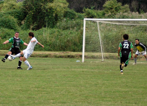
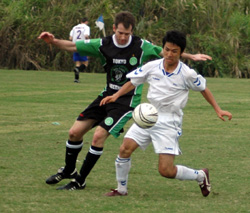

|
Misato, Sun 1st Oct. The long trek out to Dasaitama proved to be well worth it as the Hibs put in their best performance of the season so far. The weather was perfect and the pitch was a nice grass surface, perfect conditions for a game of football.

We began with a good squad of 14, with Kenji making his first appearance for sometime in a Hibs shirt. We began at a high tempo and spurned several chances early. Mick was put through on goal and with the keeper beaten he put the shot into the side netting. By the time the first changes were made 20 minutes in we were still locked at 0-0 and we were starting to wonder if it was going to be a repeat of the Swiss game 3 weeks ago. A good build up from Tomo and Mick released Bevan who was fouled on the edge of the box when about to pull the trigger. Sam stepped up for the free kick and placed it well passed the wall and broke the tension for the Hibs to go up 1-0.
The second was a classic goal as Ike carried the ball forward from the back, played in Yasu on the left who squared for Tomo and onto Mick who pushed it back post to the unmarked Kuni Katase who made no mistake from close range. The sheer numbers of hibs men pushing forward mean marking us all is tough. We then had a clear penalty denied when Bevan was waiting for a throw in directed at his head only to be clattered over by a Kamikaze Jetro defender. The Italian ref Pietro had a clear view and everyone stopped playing until Pietro waved play on. This scribe should have remembered that penalty decision between Australia and Italy go the Italian's way by default…..The next throw-in in a similar position was flicked back by Bevan onto Yama, who flicked it to Mick who put in a great header from close range. Tomo then had a break away after another fast break from the Hibs and a shattering challenge between Tomo and the keeper not unlike Harewood and Shay Given’s recent bone-jarrer saw both players injured. 3-0 into half time. It could have been 5.
The Hibs got better in the second half and the goals became a bit of a blur as Jetro became disheartened. And the Hibs men began queuing up to score. If not for some last ditched defending and wayward finishing the score could have been more. After accumulating a goal difference of 18 – 0 in the past two games the Hibs will be facing a much sterner challenge this coming Saturday when we host YCAC, who will be tough at the back and hoping to springboard their 06/07 title aspirations. The Hibs will be regretting the return to St Mary’s where the small pitch ill-suits their open attacking possession passing game. It should be a great game..
Report – Bevan Colless.
|